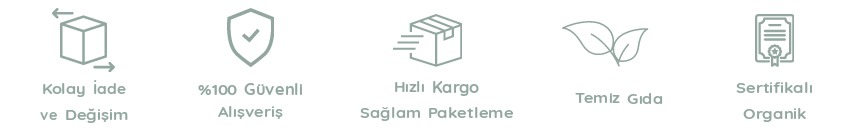

Trabzon'un yaylarında büyümüş biri olarak şunu söyleyebilirim ki doğal ürünlerin tadını,zevkini tattıktan sonra
inanın başka bir şey yemek istemiyorsunuz.Ben de düşündüm ki ülkemiz neden bu güzellikten mahrum kalsın herkes bu
ürünleri mutlaka tatmalı dedim ve 14.04.2023 tarihinde Mel's Bazaar'ı kurdum.
Yerel üreticilerin seçimi konusunda ise son derece hassas ve titiz davranıyoruz. Yerel üreticilerin başvurularını
özenle değerlendirdikten sonra, üretim tesislerine ziyaret ediyor ve periyodik olarak kontroller
gerçekleştiriyoruz. Yöresel ürünleri, hijyen koşullarına uygun şekilde imal eden yerel üreticiler, birçok
ayrıcalıkla birlikte yöresel ürün pazarımızda yerini alıyor. Bu sayede hem tüketiciler çok daha lezzetli ve
sağlıklı gıdalarla buluşurken, hem de yerel üreticilerin, çiftçilerin, kooperatiflerin kalkınmasına destek
oluyoruz.
